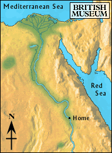

Delta

After many days of sailing, the boat slowed down and the rowers rested. The boy looked over the side of the boat.
The river ahead was divided into many small channels. He could see the desert in the distance, but the land by the river was marshy and green. Maybe his brother had become a farmer here.
The boat pulled up alongside another boat going the other way. The sailors were getting ready to hoist the sails.
Should he jump over to the other boat and go upstream, or explore the fertile land?